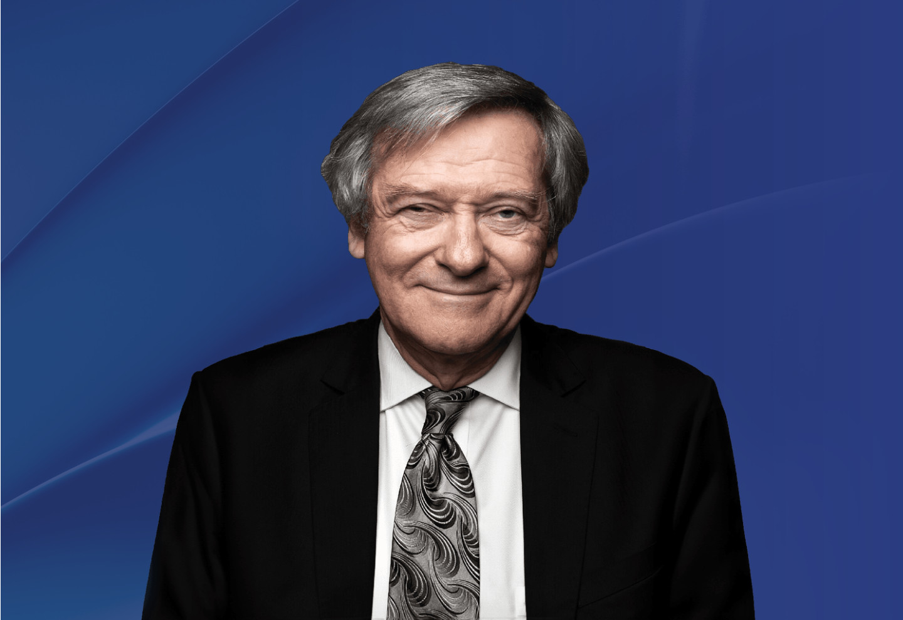

Professor Roger Blandford
Professor of Physics and of Particle Physics and Astrophysics
Stanford University
USA

Professor Roger Blandford took his BA, MA and PhD degrees at Cambridge University. Following postdoctoral research at Cambridge, Princeton and Berkeley he took up a faculty position at Caltech in 1976 becoming the Tolman Professor in 1989. In 2003, he became the first Director of the Kavli Institute for Particle Astrophysics and Cosmology at Stanford and is currently the Director of the Simons Collaboration on Extreme Electrodynamics of Compact Sources. With Kip Thorne he co-authored Modern Classical Physics. His research interests include compact sources, cosmic rays, cosmology, and astrobiology. He is a Fellow of the Royal Society, the American Academy of Arts and Sciences, the American Physical Society and a Member of the National Academy of Sciences. He chaired the 2010 Decadal Survey of Astronomy and Astrophysics. He was awarded the 1998 AAS Heineman Prize, the 2013 RAS Gold Medal, the 2016 Crafoord Prize for Astronomy and the 2020 Shaw Prize for Astronomy.
(註：所有中文譯本，皆以英文本為準)